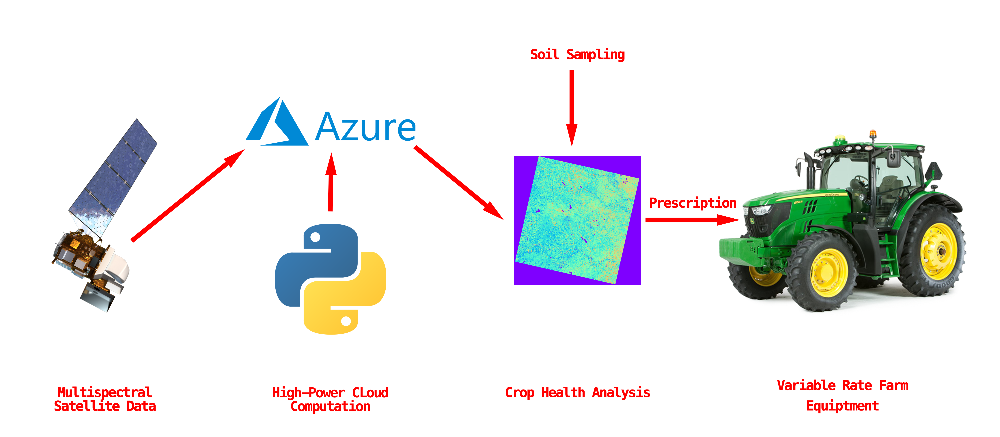

Precision Agriculture
By 2050, the worlds population will reach 9.1 billion. An emerging global challenge is providing food for the projected 34% increase in population. The Food and Agriculture Organization of the United Nations estimates that a 70% increase in biofuel production is required in order to sustain this growth target
Satellite NDVI in Python
Written in python, I have developed a set of scripts collects satellite imagery collected by Landsat 8 and utilizes different spectral bands to compute normalized difference vegetation indices for selected areas of land. The code is extremely versatile and capable of being scaled easily in the cloud. Index quality and contrast rivals commercially available services such as Bayer's Climate Fieldview

Pix4D in Azure
Pix4d is a high power photogrammetry software that is able to create high precision, orthorectified photomosaics for analysis. For a rapidly growing company like MADTECH, we needed a scalable platform to run our analyses on in order to meet client deadlines and process large amounts of data in the most economical way possible. I played a significant role in migrating the MADTECH workflow from locally run machines in our founder's home office to on-demand cloud servers in azure. This allowed us to cut solve times from days to hours in some cases.
Field Boundaries in MATLAB
Find the geographic boundaries and key features of a client's field did not take very long, but as our list of clients began to grow, it became necessary to automate the process. Using MATLAB's computer vision suite, and metadata passed with satellite imagery regarding the coordinates of the image corners. My script was capable of determining the centers and edge locations of all fields irrigated with center pivot systems. The outputted list of coordinates can be passed to Pix4D or a python script allowing the bounds of an NDVI calculation to be found easily.